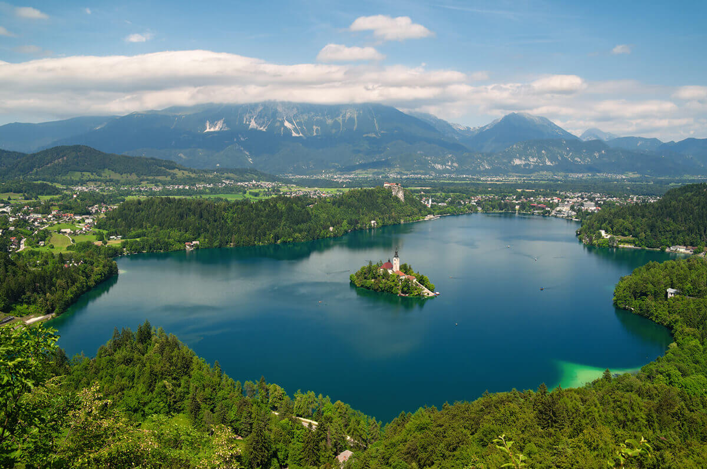
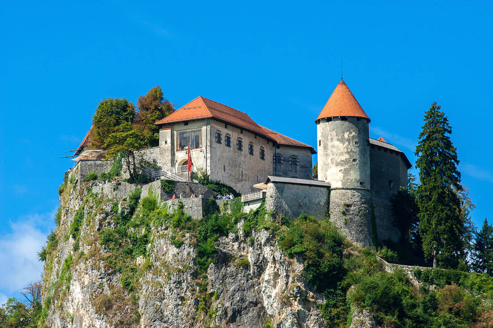

ОЗЕРО БЛЕД
Прелестный небольшой альпийский городок Блед (Словения) с живописным островком среди озера (на высоте 501 м над уровнем моря), замком на скалистом утёсе и очертанием Юлийских Альп на дальнем плане – всё это создает потрясающий пейзаж.

Кристально чистое озеро Блед создано Бохиньским ледником. Озеро замерзает в морозную зиму, образуя естественный каток. Зимой в Бледе можно покататься на лыжах, коньках и санях.
Блед не является классическим горнолыжным курортом, однако вполне обеспечивает получение отличных эмоций любителям катания по белоснежным склонам.

С островом (единственный словенский остров) связано много легенд, одна из которых положена в основу произведения известного словенского поэта – Ф. Прешерна. Согласно ей, храм, который стоит посреди озера, был посвящен богине любви. Сегодня на его месте - церковь Успения Девы Марии.
Длинная лестница состоит из 99 ступеней. Во время свадеб, проводимых на острове, жених должен пронести по ней невесту.

Внутри есть любимый у туристов «колокол желаний». Чтобы исполнились самые заветные желания, достаточно три раза в него позвонить.

Вокруг озера проложена прогулочная дорога. Именно этот маршрут – основной для всех, кто приехал на озеро Блед. Тут бегают, гуляют с детьми, прогуливаются пожилые люди и даже ловят рыбу. Можно поймать достаточно крупных карасей.

Добраться до острова можно на моторной лодке либо на традиционной деревянной гондоле с плоским дном – Плетна. Такой способ используется уже много веков.
В лодку помещаются до 20 пассажиров, а управляется она, как и гондола, с помощью весла.

Знаковая достопримечательность озера - старейший в Словении замок Блед, построенный в XI веке.
Он располагается на скалистом утесе над озером.

Со смотровой площадки замка открывается панорамный вид на озеро Блед, альпийские пейзажи и вершину Триглав - самую высокую в Словенских Альпах (2846 м).


Летом на территории Бледского замка можно увидеть турниры лучников и рыцарей, а также свадьбы в традиционных средневековых нарядах.

ВВЕРХ